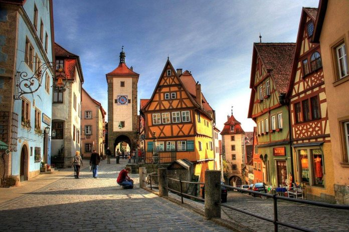

Entdecken Sie die Vielfalt der deutschen Kultur.
Discover the richness of German culture.
Hier ist ein Artikel, um mehr über die deutsche Kultur zu erfahren. Von Festen über Musik, Kunst bis hin zu Sport deckt dieser Artikel eine Vielzahl von Themen und interessanten Fakten ab.
Here is an article to learn more about German culture. From festivals to music, art, and sports, this article covers a variety of topics and interesting facts.
Los geht's! (Let's go!)
Die deutsche Sprache weltweit - Wie viele Sprecher?
The German Language Worldwide - How Many Speakers?
Als meistgesprochene Sprache in der Europäischen Union enthüllt dieser Artikel die 42 Länder weltweit, die diese Sprache teilen.
As the most spoken language in the European Union, this article reveals the 42 countries in the world that share this language.
Los geht's! (Let's go!)